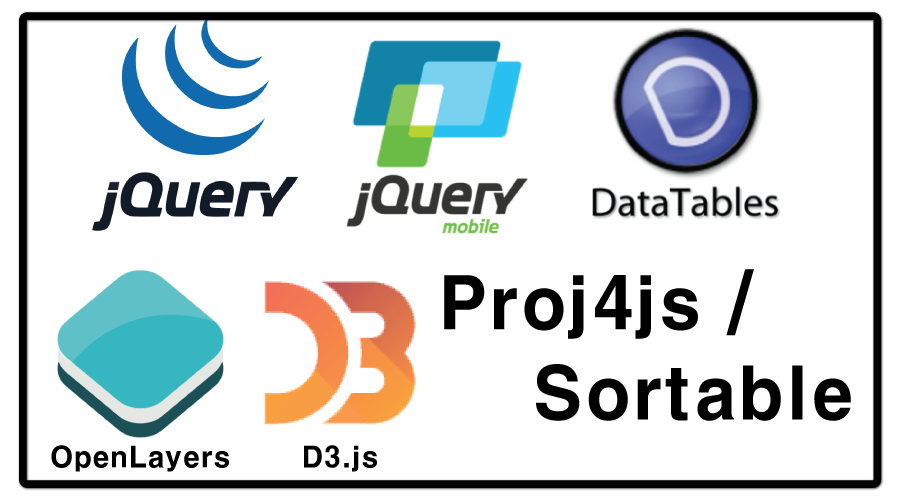
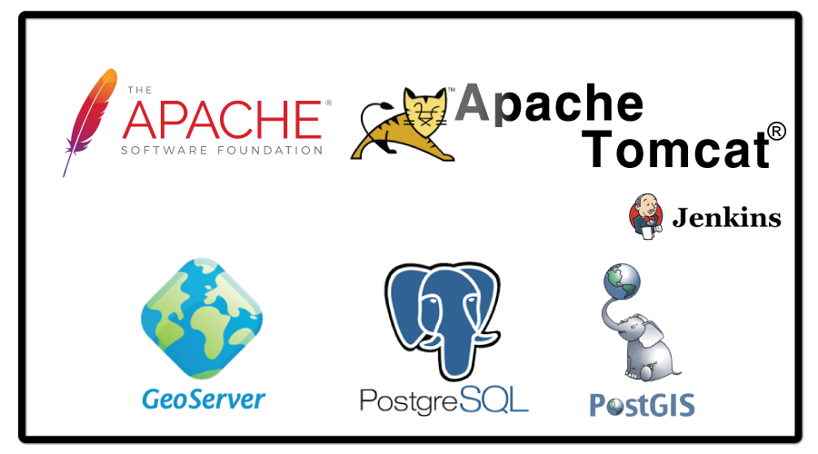
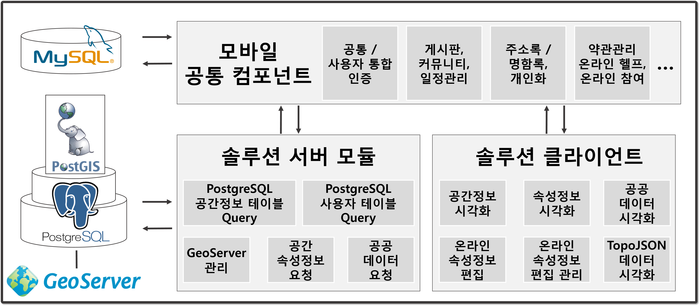

모바일 웹 매핑 솔루션 2.0(MoWMaS 2.0: Mobile Web Mapping Solution)은 모바일 웹에서 공공 데이터와 공간정보를 연계하여 시각화할 수 있는 서버 및 클라이언트로 전자정부 모바일 표준프레임워크 기반 솔루션이다.
참고
MoWMaS는 국토교통부 국토공간정보연구사업 공간정보 SW활용을 위한 오픈소스 가공기술 개발
MoWMaS Application Server
전자정부 모바일 표준프레임워크 프로젝트 기반으로 개발된 자바 기반의 서버
MoWMaS Mobile Client
전자정부 모바일 표준프레임워크 실행환경 기반으로 개발된 자바스크립트 라이브러리
기능
전자정부 모바일 실행환경 컴포넌트 UI/UX 편리 생성 기능
OpenLayers 3 활용 공간정보 데이터 시각화
공간정보 시각화 레이어 관리 기능
WebSocket 활용 속성정보 온/오프라인 편집 기능
D3.js 활용 차트 시각화
활용 오픈소스
모바일 웹 매핑 솔루션은 공간정보 및 시각화 관련 라이브러리가 다수 사용되었다. 또한 서비스를 하기 위해 사용되는 소프트웨어가 존재한다.
이는 모두 오픈소스로 구성되어 있으며, 목록 및 라이선스는 다음과 같다.
오픈소스 목록
MoWMaS Application Server
전자정부 표준프레임워크 (http://www.egovframe.go.kr)
Spring Framework (https://projects.spring.io)
MyBatis (http://www.mybatis.org)
Jackson
GeoSolutions (http://www.geo-solutions.it)
MojoHaus (http://www.mojohaus.org)
MoWMaS Mobile Client
표준프레임워크 모바일 실행환경
jQuery (https://jquery.com)
jQuery Mobile (https://jquerymobile.com)
PROJ.4 (http://proj4.org)
OpenLayers 3 (http://openlayers.org)
D3(Data-Driven Documents) (http://d3js.org)
DataTables (https://datatables.net/)
Sortable
Software
Apache (http://www.apache.org)
Tomcat (http://tomcat.apache.org)
GeoServer (http://geoserver.org)
PostgreSQL / PostGIS
MoWMaS Application Server
MoWMaS Client

Open Source Software

통합 예제
서버 및 클라이언트 모듈을 활용하여 생성한 간단한 통합 예제
전자정부 표준 프레임워크 연동
전자정부 표준프레임워크에서 제공하는 공통 컴포넌트 연동 가능

라이선스
모바일 웹 매핑 솔루션은 어플리케이션 서버와 클라이언트로 구성되어 있으며 각 각 다른 라이선스를 가진다.

![모바일 웹 매핑 솔루션 구성도. 통합 예제는 솔루션에서 제공하는 어플리케이션 서버 및 모바일 클라이언트 라이브러리를 활용하여 테스트 목적으로 만들어진 시스템이다. 어플리케이션 서버에 개발 된 라이브러리를 통해 Geoserver를 관리하고 서버 데이터베이스에 Query를 하여 공간정보 상세정보 요청 및 가공, Websocket 온라인 속서정보 관리를 할 수 있다. 서울 열린데이터 광장과 공공데이터 포털에 공공 데이터를 요청 할 수 있으며, 현재 실시간 환경정보 데이터 요청이 가능하다. 모바일 클라이언트 라이브러리에서는 Vworld에서 제공하는 데이터를 요청 및 시각화할 수 있으며, 웹에 존재하는 IndexedDB를 활용하여 속성정보를 저장 및 시각화할 수 있다. 또한, WebSocket을 활용하여 온라인, 오프라인 속성정보 편집 및 관리를 할 수 있으며, 서버에서 요청한 OpenAPI를 기반으로 다양한 공공데이터 시각화가 가능하다. 이러한 기능은 모바일 클라이언트와 어플리케이션 간의 통신을 통해 제대로 동작하는 것을 확인할 수 있다. 또한, 모바일을 타겟으로 하고 있으므로 태블릿 PC의 웹을 통해 접속하여도 모든 서비스가 가능하다.](./images/main/Integrated.png)